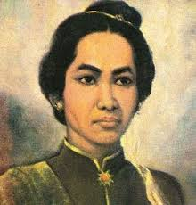

| Cut Nyak Dien |
Cut Nyak Dhien dilahirkan dari keluarga bangsawan yang taat
beragama di Aceh Besar, wilayah VI Mukim
pada tahun 1848. Ayahnya bernama Teuku Nanta Seutia, seorang uleebalang VI Mukim, yang juga
merupakan keturunan Datuk Makhudum Sati, perantau dari Minangkabau. Datuk Makhudum Sati merupakan
dari Laksamana Muda Nanta yang merupakan perwakilan Kesultanan Aceh pada zaman
pemerintahan Sultan Iskandar Muda di Pariaman.
Sumber : Wikipedia.com
|

|